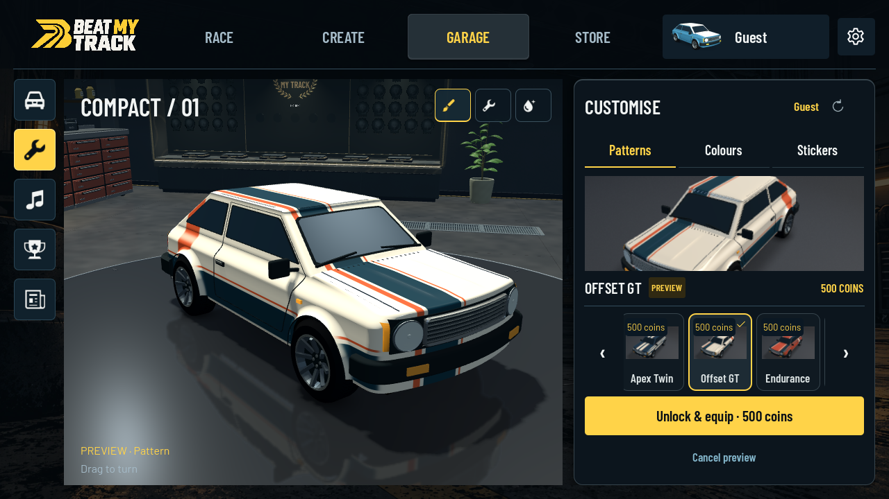
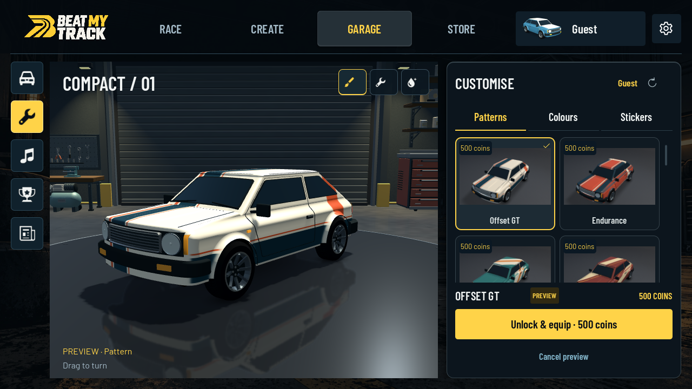
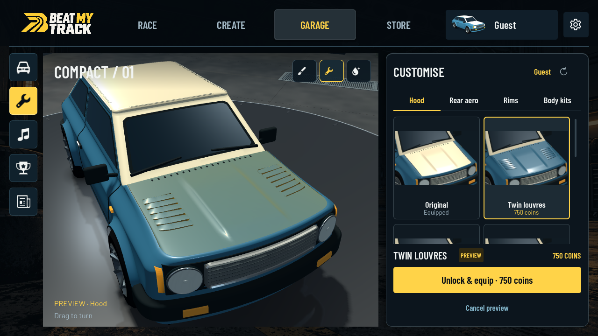
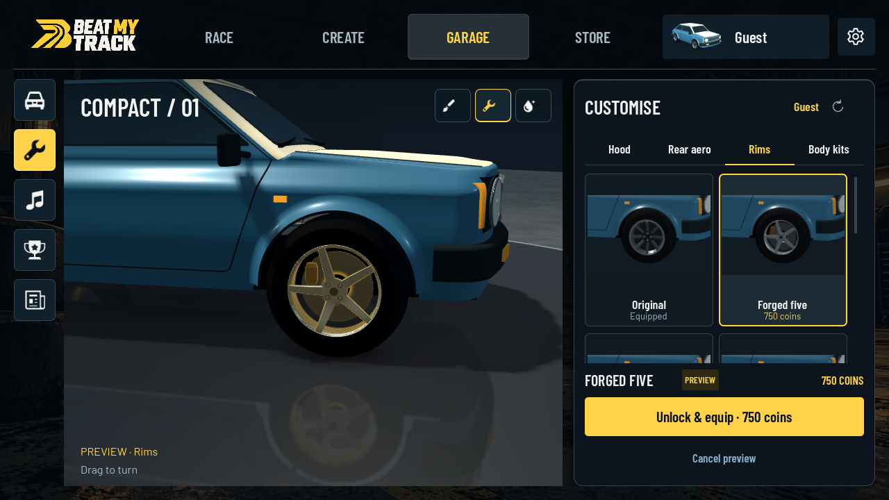
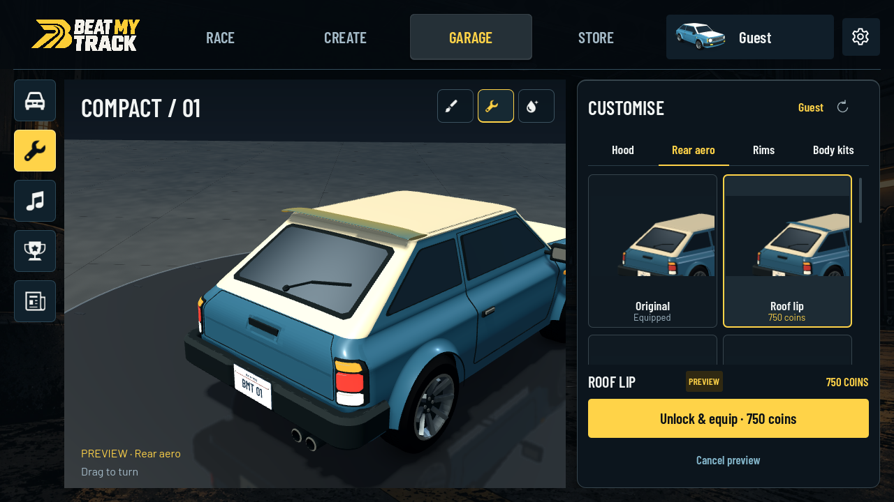
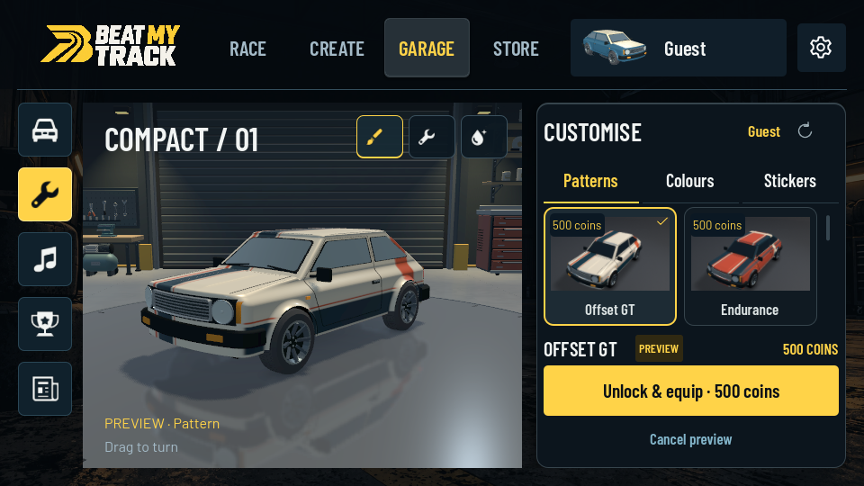
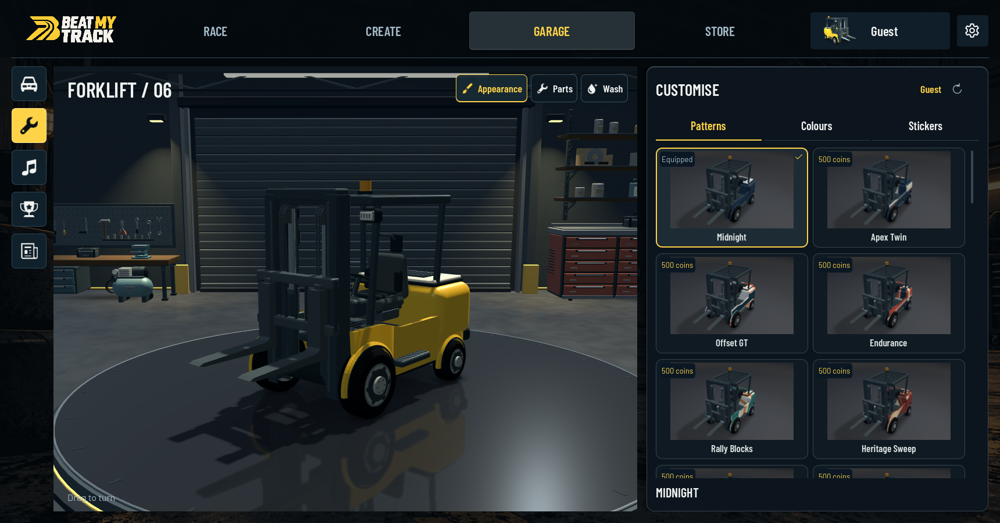

Garage options and main-view focus
Actual Godot App captures, 25 October 2026. Patterns and Parts use the right panel for options. The main Garage camera fits the whole car for paint and patterns, and focuses on the selected part or sticker surface. Cancelling a preview keeps the editing view; leaving the workbench restores the previous Garage camera.

Before: Patterns still used the separate detail-photo layout.

After: options on the right, a fitted main view and the selected design visible.

Parts: selecting Hood focuses the actual Garage car before choosing an option.

Wheel options use the same main Garage view.

Rear aero focuses the rear of the car.

960 × 540, desktop Mobile renderer.

Actual model bounds fit all seven vehicles, including the tall Forklift.
Verification includes entry focus, all seven body fits at two window sizes, category changes, gestures, exact camera restoration, free previews, purchase/save/account guards and the retained bounded photo cache. Recorded commands and results. Windows Compatibility and Vulkan Mobile only; physical-device and owner acceptance remain. No device attachment check, APK, real purchase, deployment or owner-process restart.